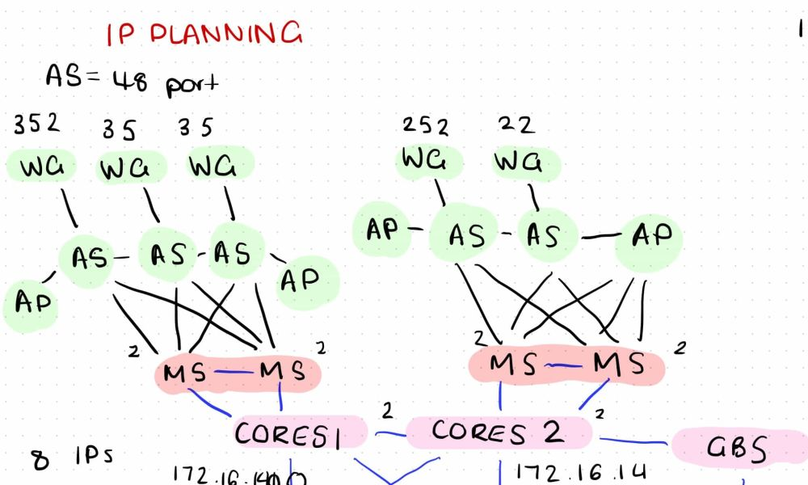
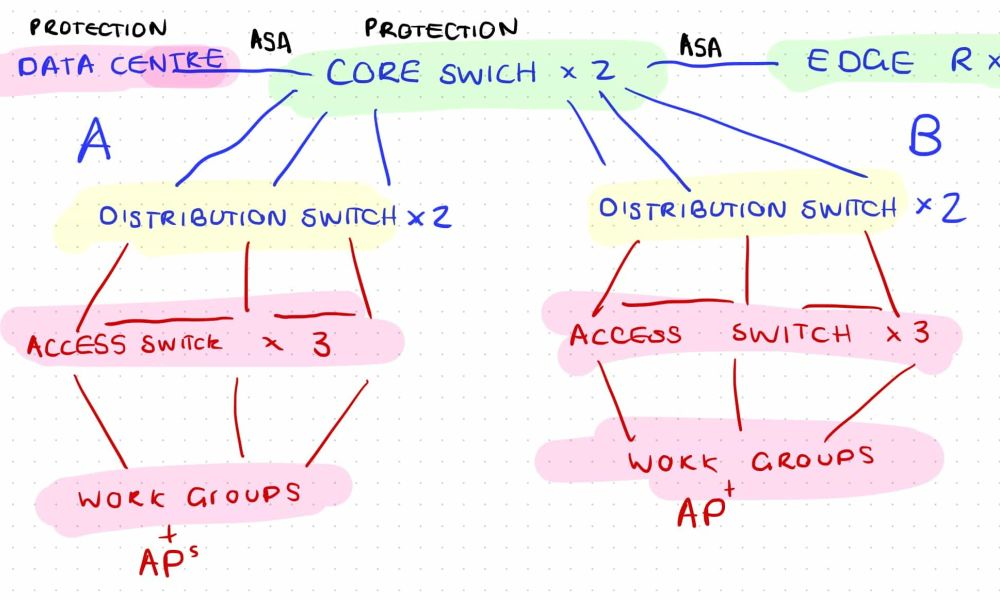
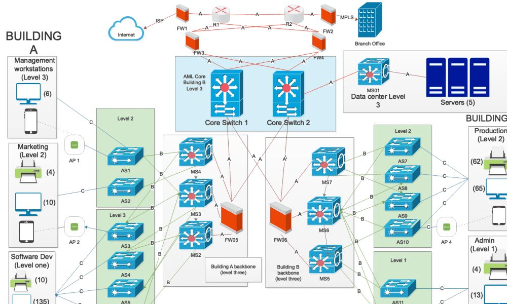

HAGRAM DESIGNS
GRAPHIC PRODUCTION AND PREPARATION
As part of many of my subjects, i have had to develop skills relating to graphic prodouction and preparation. For this process, i use my iPad Pro with an Apple Pencil as it allows me many mulitple graphic design skills that are simple to use. For a data communications and networking unit, i have logged my design process with screenshots.
Design Preparations:
 Final Graphic
Through the preparation shown above of the final design and structure of the network, i was able to create the network diagram below:
